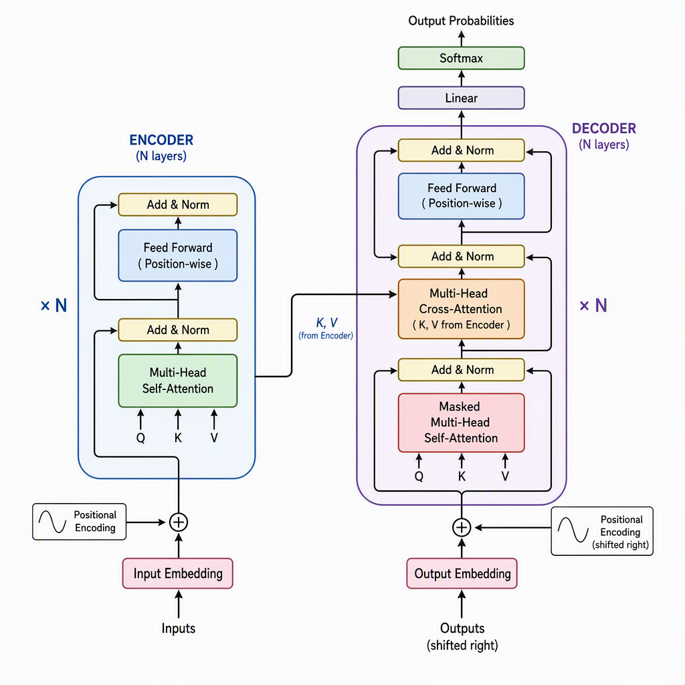

Transformer
1引言
2017 年，Vaswani 等人在论文《Attention is All You Need》中提出了 Transformer——一个完全基于注意力机制的序列建模架构。它丢掉了 RNN 的循环结构，也放弃了 CNN 的局部感受野，只用自注意力完成全局依赖建模，凭借完全可并行这一优势迅速取代 RNN，成为 NLP 乃至整个深度学习的基础设施。
要理解它为什么重要，只需对比两条信息通路：RNN 处理长度为 $L$ 的序列必须逐步递推，第 $L$ 步才能拿到第 1 个词的信息，串行步数为 $O(L)$；而自注意力让任意两个位置之间的路径长度恒为 $O(1)$——第 1 个位置和第 $L$ 个位置可以直接交换信息，且整条序列能一次性并行计算。
RNN 的信息流是一条链 $h_t = f(h_{t-1}, x_t)$，长距离信息在逐级传递中不断衰减，这正是梯度消失的根源。自注意力把信息通路压成一步：位置 $i$ 与位置 $j$ 无论相距多远，都通过 $\text{softmax}(QK^\top)$ 直接交互。代价是计算量从 $O(L \cdot d^2)$ 上升到 $O(L^2 \cdot d)$——这个 $O(L^2)$ 也是后续 FlashAttention、稀疏注意力等所有长序列优化技术的靶心。
1.1 发展脉络
1.2 本模块的阅读路线
本模块共 8 章，沿「一个架构 → 三个核心公式 → 一套工程实践」推进：先建立整体图像（第 2 章），再逐个拆解三个核心组件——自注意力（第 3 章）、多头注意力（第 4 章）、位置编码（第 5 章），随后补充 FFN 与残差等辅助组件（第 6 章），最后进入训练（第 7 章）与推理部署（第 8 章）。
阅读建议：仅需了解 Transformer 整体结构，读第 2 章即可；如需动手实现，第 3、4 章的公式与代码为必读内容；关注大模型推理性能，第 8 章为重点。
2整体架构
Transformer 采用 Encoder–Decoder 结构：编码器把输入序列压缩成一组连续表示，解码器基于编码器输出和已生成的 token，自回归地逐词生成。当前主流大模型（GPT、LLaMA、DeepSeek）大多只保留解码器，但完整的 Encoder–Decoder 视角是理解所有变体的起点。

2.1 输入处理：词嵌入 + 位置编码
输入 token 序列先经词嵌入矩阵映射为 $d_{\text{model}}$ 维向量矩阵：
由于自注意力对输入顺序不敏感（打乱输入，输出只是相应打乱），必须显式注入位置信息。做法是把位置编码矩阵直接加到嵌入上：
实践中嵌入通常还会乘以 $\sqrt{d_{\text{model}}}$，让嵌入与位置编码的数值量级匹配。位置编码的具体方案（正弦 / 可学习 / RoPE / ALiBi）在第 5 章展开。
2.2 编码器：两个子层 + 残差
编码器由 $N$ 个结构相同的层堆叠而成（原论文取 $N=6$）。每层只有两个子层：
- 多头自注意力——输入同时充当 Q、K、V，每个位置关注所有位置；
- 逐位置前馈网络——对每个位置独立施加两层全连接。
每个子层外均包裹一层「残差 + 层归一化」，这是深层网络能够稳定训练的关键：
上式即原论文的 Post-LN（归一化放在残差之后）。现代实现多改为 Pre-LN（归一化放在子层之前），训练更稳、无需 warmup——详见第 6 章。
2.3 解码器：多一个交叉注意力
解码器同样是 $N$ 层堆叠，但每层有三个子层：
- 掩码自注意力——用因果掩码阻止位置 $i$ 看到 $i$ 之后的 token，保证自回归生成的合法性；
- 交叉注意力——Q 来自解码器上一层，K、V 来自编码器的最终输出；
- 逐位置前馈网络——与编码器完全相同。
2.4 输出层
解码器的最终隐状态经线性层投影到词表大小的 logits，再经 softmax 得到下一个 token 的概率分布：
其中 $\mathbf{W}_o \in \mathbb{R}^{|\mathcal{V}| \times d_{\text{model}}}$，$|\mathcal{V}|$ 为词表大小。
2.5 三种架构变体
| 变体 | 代表模型 | 注意力类型 | 擅长任务 |
|---|---|---|---|
| Encoder-Only | BERT、RoBERTa | 双向自注意力 | 理解：分类、NER、抽取式问答 |
| Decoder-Only | GPT、LLaMA、DeepSeek | 因果（掩码）自注意力 | 生成：对话、续写、推理 |
| Encoder–Decoder | T5、BART、原始 Transformer | 掩码自注意力 + 交叉注意力 | 序列到序列：翻译、摘要 |
编码器允许每个位置看到全部上下文（双向），适合「理解」；解码器严格单向，适合「生成」；Encoder–Decoder 介于两者之间——编码器双向读入、解码器单向输出。当前大模型趋势是以 Decoder-Only 统一架构，因为它在规模化训练上最简单也最通用。
3自注意力机制
自注意力是 Transformer 的心脏。它让序列中每个位置直接与所有位置交互，计算出各位置之间的关注权重，再按权重聚合信息。本章从 Query–Key–Value 的直觉出发，推导出缩放点积注意力这一个核心公式，并解释每个设计选择背后的必要性。
3.1 Query、Key、Value 的检索类比
自注意力借用信息检索的框架：给定一个查询（Query），在「键–值」对集合中按键（Key）与查询的相关度检索出值（Value）。在自注意力里，Q、K、V 都由同一输入 $\mathbf{X}$ 经线性投影得到：
其中 $\mathbf{W}_Q, \mathbf{W}_K \in \mathbb{R}^{d_{\text{model}} \times d_k}$，$\mathbf{W}_V \in \mathbb{R}^{d_{\text{model}} \times d_v}$。用三组不同的投影，是为了让模型从不同视角看待同一序列。
查询需求即 Query，每本书的标题即 Key，书的内容即 Value。用查询需求比对每本书标题的相似度，相似度越高的书权重越大，最终按权重汇总书的内容——此即一次注意力计算。在自注意力中，序列中每个 token 同时充当「查询者」和「被查询对象」。
3.2 缩放点积注意力
核心运算只有三步：① 用 Q 与 K 的点积衡量相似度；② 用 softmax 将相似度归一化为权重；③ 用权重对 V 加权求和。公式为：
这是 Transformer 最核心的公式。为什么除以 $\sqrt{d_k}$ 是理解它的关键——详见 3.4 节。
3.3 Softmax 归一化
Softmax 把任意实数向量映射成概率分布（非负、且和为 1）：
在注意力里，$z_i$ 就是查询与第 $i$ 个键的缩放点积。正因为 softmax 的输出构成一组权重，注意力输出才等价于对 Value 的加权平均。
3.4 为什么必须缩放？
假设 $\mathbf{q}$ 与 $\mathbf{k}$ 的各分量独立服从标准正态分布，那么点积 $\mathbf{q} \cdot \mathbf{k} = \sum_{i=1}^{d_k} q_i k_i$ 的方差正好等于 $d_k$，标准差为 $\sqrt{d_k}$。当 $d_k$ 很大时，点积的数值范围变得极宽，softmax 会进入饱和区——输出退化成近似 one-hot，梯度趋近于零。除以 $\sqrt{d_k}$ 把方差拉回 1：
若 Q、K 各分量服从 $\mathcal{N}(0,1)$，则 $\mathbf{Q}\mathbf{K}^\top$ 的元素标准差约为 $\sqrt{512} \approx 22.6$。Softmax 的输入落在 $\pm 22$ 这个量级时，最大值位置的权重几乎为 1、其余几乎为 0——梯度趋近于零，训练几乎停滞。除以 $\sqrt{512} \approx 22.6$ 后标准差回到 1，softmax 回到正常工作区间。这就是缩放项存在的全部理由。
3.5 注意力矩阵的含义
注意力权重矩阵 $\mathbf{A} = \text{softmax}(\mathbf{Q}\mathbf{K}^\top / \sqrt{d_k}) \in \mathbb{R}^{L \times L}$ 是一个行随机矩阵（每行之和为 1）。其中 $A_{ij}$ 表示位置 $i$ 对位置 $j$ 的关注程度，第 $i$ 行的输出就是按这组权重对 Value 的加权平均：
3.6 计算复杂度
| 运算 | 时间复杂度 | 空间复杂度 |
|---|---|---|
| $\mathbf{Q}\mathbf{K}^\top$ | $O(L^2 d_k)$ | $O(L^2)$ |
| softmax | $O(L^2)$ | $O(L^2)$ |
| $\mathbf{A}\mathbf{V}$ | $O(L^2 d_v)$ | $O(L d_v)$ |
| 合计 | $O(L^2 d)$ | $O(L^2 + Ld)$ |
当 $d \ll L$ 时，瓶颈完全落在 $O(L^2)$ 的注意力矩阵上——此即长序列 Transformer 的核心瓶颈，也是第 8 章 FlashAttention 等技术的出发点。
3.7 PyTorch 实现
import math import torch import torch.nn as nn import torch.nn.functional as F def scaled_dot_product_attention(Q, K, V, mask=None): # Q: (B, L_q, d_k) K: (B, L_k, d_k) V: (B, L_k, d_v) d_k = Q.size(-1) scores = torch.matmul(Q, K.transpose(-2, -1)) / math.sqrt(d_k) # (B, L_q, L_k) if mask is not None: scores = scores.masked_fill(mask == 0, float("-inf")) # 因果掩码 attn = F.softmax(scores, dim=-1) # 行归一化 out = torch.matmul(attn, V) # (B, L_q, d_v) return out, attn
4多头注意力
单个注意力头只能学出一种「关注模式」。为了让模型同时捕捉多种依赖关系——语法搭配、语义相似、指代消解……Transformer 引入多头注意力：把 Q、K、V 分成 $h$ 组分别做注意力，最后拼接并投影回原维度。
4.1 公式
第 $i$ 个头的计算为：
其中 $\mathbf{W}_i^Q, \mathbf{W}_i^K \in \mathbb{R}^{d_{\text{model}} \times d_k}$，$\mathbf{W}_i^V \in \mathbb{R}^{d_{\text{model}} \times d_v}$，且 $d_k = d_v = d_{\text{model}} / h$。所有头拼接后再做一次线性投影：
其中 $\mathbf{W}^O \in \mathbb{R}^{h d_v \times d_{\text{model}}}$。
4.2 为什么「降维再拼接」，而不是多个全维度头？
这是多头设计中最容易被忽略的一点。若每个头都用完整的 $d_{\text{model}}$ 维度，$h$ 个头的计算量和参数量将是单头的 $h$ 倍。Transformer 选择让每个头只看 $d_{\text{model}} / h$ 维——相当于把特征空间切分成 $h$ 个子空间，每个头专攻一个子空间；拼接后维度回到 $d_{\text{model}}$，总开销与单头完全一致。这是一种「分治」策略：在零额外成本的前提下，换取关注模式的多样性。
4.3 注意力的三种用法
| 模式 | Q 来源 | K, V 来源 | 掩码 | 出现位置 |
|---|---|---|---|---|
| 自注意力 | 当前层 | 当前层 | 无（全部可见） | 编码器 |
| 掩码自注意力 | 当前层 | 当前层 | 因果掩码（下三角） | 解码器 |
| 交叉注意力 | 解码器 | 编码器最终输出 | 无 | 解码器 |
4.4 因果掩码
解码器在做掩码自注意力时，位置 $i$ 只能看到 $0, 1, \ldots, i$，不能提前获取未来的 token 信息。实现方式是把注意力分数矩阵的上三角部分置为 $-\infty$：
经过 softmax 后，$-\infty$ 位置的权重自动变成 0，因果约束即可实现。
4.5 PyTorch 实现
class MultiHeadAttention(nn.Module): def __init__(self, d_model=512, num_heads=8): super().__init__() assert d_model % num_heads == 0 self.d_model = d_model self.num_heads = num_heads self.d_k = d_model // num_heads self.W_q = nn.Linear(d_model, d_model) # 一次投影全维度，再 view 分头 self.W_k = nn.Linear(d_model, d_model) self.W_v = nn.Linear(d_model, d_model) self.W_o = nn.Linear(d_model, d_model) def forward(self, q, k, v, mask=None): B = q.size(0) # (B, L, d_model) -> (B, h, L, d_k) Q = self.W_q(q).view(B, -1, self.num_heads, self.d_k).transpose(1, 2) K = self.W_k(k).view(B, -1, self.num_heads, self.d_k).transpose(1, 2) V = self.W_v(v).view(B, -1, self.num_heads, self.d_k).transpose(1, 2) scores = torch.matmul(Q, K.transpose(-2, -1)) / math.sqrt(self.d_k) if mask is not None: scores = scores.masked_fill(mask == 0, float("-inf")) ctx = torch.matmul(F.softmax(scores, dim=-1), V) # (B, h, L, d_k) ctx = ctx.transpose(1, 2).contiguous().view(B, -1, self.d_model) # 拼接 return self.W_o(ctx)
5位置编码
自注意力本身是排列不变的——打乱输入顺序，输出只是相应打乱，内容不变。这意味着模型完全不知道 token 位于第几位。位置编码（Positional Encoding）的作用就是把位置信息注入模型，使每个位置的表示不仅取决于「是什么」，还取决于「在哪里」。
5.1 正弦位置编码
原论文用固定的正弦/余弦函数生成位置编码。对位置 $pos$ 和维度 $i$：
不同维度对应不同周期的正弦波，从高频到低频铺满整个频段。这种设计的关键收益是：对任意固定偏移 $k$，$PE_{pos+k}$ 可以写成 $PE_{pos}$ 的线性函数，因此模型能方便地学到相对位置关系。
直接写位置编号有两个问题：一是数值无界，超出训练长度即失效；二是「位置 5 和位置 6 相邻」这种关系无法从数值本身读出。正弦编码同时解决了两点——每个位置的编码唯一，且相对位移可以由线性变换表达：$\sin(pos+k) = \sin(pos)\cos(k) + \cos(pos)\sin(k)$。模型仅需学习 $\cos(k)$ 和 $\sin(k)$，即可表示「偏移 $k$ 步」的位置关系。
取 $d_{\text{model}} = 4$（仅 4 维），则 $i \in \{0, 1\}$，波长分别为 $10000^{0/2} = 1$（维度 0、1）和 $10000^{2/4} = 100$（维度 2、3）。
| pos | $PE_{(pos,0)}=\sin(pos/1)$ | $PE_{(pos,1)}=\cos(pos/1)$ | $PE_{(pos,2)}=\sin(pos/100)$ | $PE_{(pos,3)}=\cos(pos/100)$ |
|---|---|---|---|---|
| 0 | 0.000 | 1.000 | 0.000 | 1.000 |
| 1 | 0.841 | 0.540 | 0.010 | 1.000 |
| 2 | 0.909 | −0.416 | 0.020 | 1.000 |
可以看到：低维（0、1）变化剧烈，高频地刻画精确位置；高维（2、3）变化极缓，低频地编码粗粒度位置。真实模型 $d_{\text{model}} = 512$ 时，频率从 $1$ 衰减到 $1/10000$，覆盖了从「逐字」到「整句」的位置粒度。
5.2 可学习位置编码
BERT、GPT-2 等模型改用可学习位置编码：定义一个可训练矩阵 $\mathbf{P} \in \mathbb{R}^{L_{\max} \times d_{\text{model}}}$，按位置取出对应行加到嵌入上：
可学习编码在训练长度范围内通常表现更好，但不具备外推能力——超过 $L_{\max}$ 的位置没有对应的编码行。
5.3 相对位置编码
绝对位置编码把位置信息加在输入上；相对位置编码则直接把位置差 $i-j$ 注入注意力分数。Shaw 等（2018）的做法是在键上叠加一个可学习的相对位置向量：
其中 $\mathbf{a}_{i-j}^K$ 是位置差 $i-j$ 对应的可学习偏置。核心思想是：注意力更应该依赖两个 token 的距离，而不是它们的绝对位置。
5.4 旋转位置编码（RoPE）
RoPE（Su 等，2021）是当前主流大模型（LLaMA、Qwen、DeepSeek 等）采用的位置编码方案。它不去修改输入，而是对 Query 和 Key 施加一个与位置相关的旋转矩阵，使得两者的内积只依赖相对位置：
对二维分量 $(q_0, q_1)$，旋转矩阵取二维旋转形式，旋转角 $\theta_m = m\theta_0$：
RoPE 的优雅之处在于：它不改变注意力的公式结构，只把位置信息「藏」在 Q、K 的旋转里，而旋转后的内积天然呈现相对位置依赖。这也让 RoPE 可以通过调节旋转基 $\theta_0$ 实现长度外推。
5.5 ALiBi（线性偏置注意力）
ALiBi（Press 等，2022）走得更彻底：完全不用位置编码，而是在注意力分数上直接加一个与距离成正比的线性偏置：
其中 $m$ 是不同注意力头各自固定的斜率。$j > i$ 时偏置为负，自然抑制对未来的关注。ALiBi 不增加任何参数，且长度外推能力强。
5.6 五种方案对比
| 方案 | 类型 | 可学习 | 外推能力 | 代表模型 |
|---|---|---|---|---|
| 正弦 PE | 绝对 | 否（固定） | 有 | 原始 Transformer |
| 可学习 PE | 绝对 | 是 | 无 | BERT、GPT-2 |
| 相对 PE | 相对 | 是 | 有限 | T5、Transformer-XL |
| RoPE | 旋转（隐式相对） | 否 | 有（可调） | LLaMA、Qwen、DeepSeek |
| ALiBi | 线性偏置 | 否 | 强 | BLOOM、MPT |
5.7 PyTorch 实现（正弦位置编码）
class PositionalEncoding(nn.Module): def __init__(self, d_model=512, max_len=5000, dropout=0.1): super().__init__() self.dropout = nn.Dropout(p=dropout) pe = torch.zeros(max_len, d_model) position = torch.arange(0, max_len, dtype=torch.float).unsqueeze(1) div_term = torch.exp(torch.arange(0, d_model, 2).float() * (-math.log(10000.0) / d_model)) pe[:, 0::2] = torch.sin(position * div_term) # 偶数维用 sin pe[:, 1::2] = torch.cos(position * div_term) # 奇数维用 cos self.register_buffer("pe", pe.unsqueeze(0)) # (1, max_len, d_model) def forward(self, x): # x: (batch, L, d_model) return self.dropout(x + self.pe[:, :x.size(1), :])
6前馈网络与残差连接
每个 Transformer 层除了注意力子层，还包含一个逐位置前馈网络（FFN）和残差连接。FFN 提供非线性变换能力（占总参数量的约三分之二），残差连接与层归一化则保证深层网络的训练稳定。
6.1 逐位置前馈网络
FFN 对序列中每个位置独立地施加两层线性变换，中间夹一个激活函数：
其中 $\mathbf{W}_1 \in \mathbb{R}^{d_{\text{model}} \times d_{ff}}$，$\mathbf{W}_2 \in \mathbb{R}^{d_{ff} \times d_{\text{model}}}$。隐层维度 $d_{ff}$ 通常取 $4 d_{\text{model}}$（如 $d_{\text{model}}=512$ 时 $d_{ff}=2048$）。
「逐位置」意味着每个 token 独立通过同一个 FFN，位置之间不交换信息——信息交互全部由注意力子层完成。这种「先注意、再变换」的分工是 Transformer 的设计精髓。
6.2 激活函数：ReLU → GELU → SwiGLU
原始 Transformer 用 ReLU。BERT、GPT 系列改用更平滑的 GELU：
LLaMA 等模型进一步使用带门控的 SwiGLU：
其中 $\text{Swish}(x) = x \cdot \sigma(x)$，$\otimes$ 表示逐元素相乘，$\mathbf{W}_3$ 是额外的门控投影。门控机制显著增强了 FFN 的非线性表达能力；代价是多了一个投影矩阵，因此通常把隐层维度调成 $\frac{2}{3} \times 4 d_{\text{model}}$ 以保持参数量不变。
6.3 残差连接
残差连接把子层输入直接加到输出上：
它解决了深层网络的梯度消失问题——梯度可以沿「捷径」直接回传到早期层，而不必穿过每一层的非线性变换。在 Transformer 中，注意力和 FFN 两个子层各自配有残差连接。
残差连接的思想来自 ResNet。Transformer 把它迁移到序列建模：没有残差，深层 Transformer 的训练将极不稳定。残差让每一层只需学习「增量修正」，而不是完整的表示变换。
6.4 层归一化
层归一化（LayerNorm）在每个样本的特征维度上做标准化：
其中 $\mu$、$\sigma^2$ 是 $\mathbf{x}$ 在特征维的均值与方差，$\gamma$、$\beta$ 是可学习的缩放与偏移。与 BatchNorm 不同，LayerNorm 不依赖批次大小，天然适合变长序列。
6.5 Pre-LN 与 Post-LN
残差和 LayerNorm 的先后顺序有两种选择：
原论文用 Post-LN，但它必须配合 warmup 才能稳定训练。Pre-LN 让残差路径上的梯度更通畅，训练更稳定、对学习率更宽容，已成为现代大模型的默认选择。
6.6 RMSNorm
LLaMA 等模型用 RMSNorm 替代 LayerNorm——去掉均值中心化，只按均方根缩放：
少一次减均值的计算和一组偏移参数，效果相当而速度更快，是当前大模型的主流归一化方案。
6.7 Encoder 层的完整表达式
把上述部件组装起来，一个 Pre-LN 的编码器层可以写成两行：
这两行即整个 Encoder Block——注意子层内部顺序被归一化处理，而残差路径始终保持「干净」，这正是 Pre-LN 稳定性的来源。
6.8 PyTorch 实现
class EncoderBlock(nn.Module): def __init__(self, d_model=512, num_heads=8, d_ff=2048, dropout=0.1): super().__init__() self.attn = MultiHeadAttention(d_model, num_heads) self.ffn = nn.Sequential( nn.Linear(d_model, d_ff), nn.GELU(), nn.Dropout(dropout), nn.Linear(d_ff, d_model), ) self.ln1 = nn.LayerNorm(d_model) # Pre-LN：归一化在前 self.ln2 = nn.LayerNorm(d_model) self.drop = nn.Dropout(dropout) def forward(self, x, mask=None): # 子层 1：自注意力 + 残差 x = x + self.drop(self.attn(self.ln1(x), self.ln1(x), self.ln1(x), mask)[0]) # 子层 2：FFN + 残差 x = x + self.drop(self.ffn(self.ln2(x))) return x
7训练与优化
架构确定之后，训练能否收敛取决于四件事：损失函数、学习率调度、优化器与正则化。本章阐述 Transformer 训练中最关键的几个实践点，并说明它们各自解决什么问题。
7.1 损失函数：交叉熵
自回归语言模型的训练目标是最大化正确 token 的对数似然，等价于最小化交叉熵：
这与「最大似然估计」完全等价——交叉熵损失就是最小化模型分布与真实分布之间的 KL 散度。
7.2 标签平滑
标签平滑把硬标签（one-hot）软化成一个小量分布，防止模型对单一答案过度自信：
其中 $K$ 为类别数，$\epsilon$ 通常取 0.1。它对翻译等生成任务尤其有效，能缓解模型过度自信带来的质量下降（如 BLEU 下降）。
7.3 学习率调度：Warmup + 衰减
Transformer 使用带 warmup 的学习率调度——先在若干步内线性升温，再按步数的平方根反比衰减：
warmup 的必要性来自训练初期的不稳定：此时模型参数随机、梯度噪声大，直接使用大学习率容易发散。这一技巧在 Post-LN 架构上几乎是必需的，Pre-LN 架构则可以放宽。
7.4 优化器：Adam 与 AdamW
Transformer 默认使用 Adam，并把权重衰减（weight decay）解耦出来，得到 AdamW：
其中 $\hat{m}_t$、$\hat{v}_t$ 是梯度一阶矩与二阶矩的偏差校正估计，$\lambda$ 是解耦后的权重衰减系数。原版 Adam 将权重衰减耦合至梯度中，与自适应学习率耦合，效果不如 AdamW——后者是当前大模型训练的标准选择。
7.5 Dropout 正则化
Dropout 在训练时随机置零部分激活值，并做缩放以保持期望不变：
Transformer 在多个位置使用 Dropout：注意力权重、残差连接后、嵌入层、FFN 中间层。注意率通常取 0.1。
7.6 权重初始化
Transformer 采用 Xavier / Glorot 初始化与其变体：权重从均值为 0、方差为 $\frac{2}{n_{in} + n_{out}}$ 的分布中采样，使前向传播中激活值的方差在各层保持稳定。残差连接会累积方差，因此原论文还会对残差分支的输出做 $\frac{1}{\sqrt{2N}}$ 的缩放。
7.7 梯度裁剪
为防止偶发的梯度爆炸，训练时对梯度范数做裁剪：
其中 $c$ 为裁剪阈值（常用 1.0）。这在大模型训练中几乎是标配。
7.8 完整训练循环
model = Transformer(d_model=512, num_heads=8, num_layers=6, vocab_size=32000) opt = torch.optim.AdamW(model.parameters(), lr=0, betas=(0.9, 0.98), eps=1e-9) crit = nn.CrossEntropyLoss(ignore_index=PAD_IDX, label_smoothing=0.1) warmup, d_model = 4000, 512 def lr_lambda(step): step = max(step, 1) return d_model ** -0.5 * min(step ** -0.5, step * warmup ** -1.5) sched = torch.optim.lr_scheduler.LambdaLR(opt, lr_lambda) for step, (src, tgt) in enumerate(loader): logits = model(src, tgt[:, :-1]) # 输入右移一位 loss = crit(logits.reshape(-1, vocab), tgt[:, 1:].reshape(-1)) opt.zero_grad() loss.backward() torch.nn.utils.clip_grad_norm_(model.parameters(), max_norm=1.0) # 梯度裁剪 opt.step() sched.step()
8推理与部署优化
训练完成只是开始。Transformer 的推理（尤其是自回归生成）有独特的内存与带宽瓶颈，围绕它发展出了一整套优化技术。本章按「先省显存、再省带宽、最后并行」的顺序介绍主流方案。
8.1 KV Cache：自回归解码的核心优化
自回归生成时，第 $t$ 步需要用到前 $t-1$ 步所有的 K、V。如果不做处理，每生成一个 token 都要重算整条序列的 K、V，造成 $O(L^2)$ 的重复计算。KV Cache 的思路直观——把历史 K、V 缓存下来，每步只计算新 token 并追加：
但缓存本身有代价：每层每个头都要存 $L \times d_k$ 个 KV 值，显存开销为
随序列长度线性增长。长上下文场景下，KV Cache 往往成为显存瓶颈——这正是接下来 MQA / GQA / PagedAttention 的动机。
8.2 Multi-Query Attention（MQA）
MQA 让所有注意力头共享同一组 K、V，只保留 Q 的多头结构：
KV Cache 体量直接缩小到原来的 $1/N_{\text{heads}}$，代价是注意力表达能力的轻微损失。MQA 在推理场景下的性价比极高。
8.3 Grouped-Query Attention（GQA）
GQA 是 MHA 与 MQA 之间的折中：把 $h$ 个 Query 头分成 $g$ 组，每组共享一对 K/V 头。$g = h$ 时退化为 MHA，$g = 1$ 时退化为 MQA：
GQA 在质量与效率之间取得了最好的平衡，已被 LLaMA-2/3、Mistral 等主流模型采用。
8.4 FlashAttention
标准注意力的瓶颈其实不在浮点运算量，而在 GPU 的显存带宽：$L \times L$ 的注意力矩阵要在 SRAM（快、小）和 HBM（慢、大）之间反复搬运，实际耗时由数据搬运主导。FlashAttention（Dao 等，2022）的做法是把 Q、K、V 切块（tiling），在 SRAM 中分块完成注意力计算，并用 online softmax 逐步修正归一化因子，全程不把完整的 $L \times L$ 矩阵写回 HBM。
注意力本身的计算量未变，节省的是显存读写。标准实现要写读 $O(L^2)$ 的中间矩阵，而内存带宽是 GPU 上最稀缺的资源之一；FlashAttention 把内存访问从 $O(L^2)$ 降到 $O(L^2/M)$（$M$ 为 SRAM 块大小），因此在实际硬件上能获得 2–4 倍加速，同时显存占用也大幅下降。
8.5 PagedAttention（vLLM）
KV Cache 在实现上仍存在一个隐患：传统做法要求为每条请求预留连续显存，长度按最大可能分配，造成大量内部碎片。PagedAttention 借鉴操作系统的虚拟内存分页思想，把 KV Cache 切成分页块按需分配、非连续存储：
块大小 $B$ 固定，每块内部连续、块之间可以离散。从而使显存利用率接近 100%，也是 vLLM 高吞吐的关键。
8.6 量化推理
把权重和激活从 FP16 压到 INT8 / INT4，用缩放因子还原：
量化能显著降低显存占用和带宽需求，是大模型在消费级硬件上部署的常用手段。难点在于如何选 $s$ 以最小化精度损失（per-tensor / per-channel / 分组量化）。
8.7 投机解码（Speculative Decoding）
用小模型（draft）先快速生成若干候选 token，再用大模型（target）一次性并行验证，接受其中被认可的部分：
由于验证可以并行，而生成是串行的，投机解码能在不改变输出分布的前提下获得 2–3 倍加速。
8.8 连续批处理（Continuous Batching）
传统静态批处理要求整个批次一起等最长的序列结束，短序列闲置等待。连续批处理（又称 iteration-level batching）在每个解码步动态插入新请求、移除已完成请求，使 GPU 始终满载。这是 vLLM、TensorRT-LLM 等高吞吐推理框架的共同基础。
8.9 优化技术速查
| 技术 | 优化的瓶颈 | 典型收益 |
|---|---|---|
| KV Cache | 避免重复计算 | 生成速度大幅提升 |
| MQA / GQA | KV Cache 显存 | 显存降至 1/h ~ 1/g |
| FlashAttention | 显存带宽 | 2–4× 加速 |
| PagedAttention | 显存碎片 | 利用率接近 100% |
| 量化（INT8/INT4） | 显存 + 带宽 | 2–4× 压缩 |
| 投机解码 | 串行解码步数 | 2–3× 加速 |
| 连续批处理 | GPU 利用率 | 吞吐显著提升 |
参考文献
- Vaswani, A., Shazeer, N., Parmar, N., et al. (2017). Attention is all you need. Advances in Neural Information Processing Systems (NeurIPS), 30. (Transformer 原始论文，自注意力/缩放点积/多头机制/位置编码)
- Bahdanau, D., Cho, K., & Bengio, Y. (2015). Neural machine translation by jointly learning to align and translate. Proceedings of ICLR. (注意力机制奠基论文，编解码器/对齐/翻译)
- Devlin, J., Chang, M.-W., Lee, K., & Toutanova, K. (2019). BERT: Pre-training of deep bidirectional transformers for language understanding. Proceedings of NAACL-HLT, 4171-4186. (预训练 Encoder-only 模型/双向注意力/MLM)
- Radford, A., Wu, J., Child, R., et al. (2019). Language models are unsupervised multitask learners. OpenAI. (GPT-2，Decoder-only 自回归/零样本学习)
- Brown, T., Mann, B., Ryder, N., et al. (2020). Language models are few-shot learners. Advances in Neural Information Processing Systems (NeurIPS), 33, 1877-1901. (GPT-3，大规模预训练/少样本提示/涌现能力)
- Dosovitskiy, A., Beyer, L., Kolesnikov, A., et al. (2021). An image is worth 16×16 words: Transformers for image recognition at scale. Proceedings of ICLR. (ViT，图像分块/Patch Embedding/视觉 Transformer)
- Shaw, P., Uszkoreit, J., & Vaswani, A. (2018). Self-attention with relative position representations. Proceedings of NAACL-HLT, 464-468. (相对位置编码/注意力偏置)
- Su, J., Lu, Y., Pan, S., et al. (2024). RoFormer: Enhanced transformer with rotary position embedding. Neurocomputing, 588, 127716. (旋转位置编码 RoPE/外推性/大模型广泛应用)
- Press, O., Smith, N. A., & Lewis, M. (2022). Train short, test long: Attention with linear biases enables input length extrapolation. Proceedings of ICLR. (ALiBi 位置编码/长度外推/线性偏置)
- Shazeer, N. (2019). Fast transformer decoding with one write-head is all you need. arXiv:1911.02150. (Multi-Query Attention/解码加速/KV Cache 优化)
- Ainslie, J., Lee-Thorp, J., de Jong, M., et al. (2023). GQA: Training generalized multi-query transformer models from multi-head checkpoints. Proceedings of EMNLP, 4895-4901. (分组查询注意力/MQA 推广/推理效率)
- Dao, T., Fu, D., Ermon, S., et al. (2022). FlashAttention: Fast and memory-efficient exact attention with IO-awareness. Advances in Neural Information Processing Systems (NeurIPS), 35, 16344-16359. (IO 感知注意力/分块计算/精确注意力加速)
- Kwon, W., Li, Z., Zhuang, S., et al. (2023). Efficient memory management for large language model serving with PagedAttention. Proceedings of SOSP, 611-626. (vLLM/PagedAttention/显存分页管理)
- Leviathan, Y., Kalman, M., & Matias, Y. (2023). Fast inference from transformers via speculative decoding. Proceedings of ICML, 19274-19286. (投机解码/Draft 模型/推理加速)
- Xiong, R., Yang, Y., He, D., et al. (2020). On layer normalization in the transformer architecture. Proceedings of ICML, 10524-10533. (Pre-LN vs Post-LN 分析/训练稳定性/梯度流)